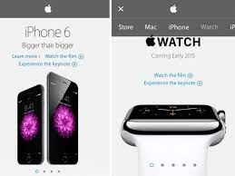
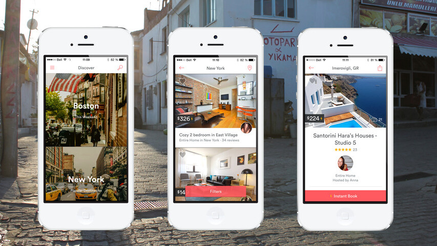
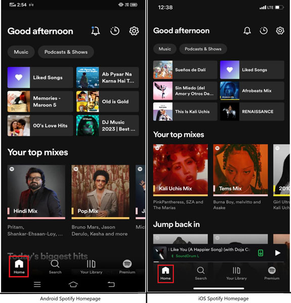

Visual Hierarchy
Organization/Company: Apple Inc.
Website Description: Apple's website is a prime example of effective visual hierarchy...
White Space and Clean Design
Organization/Company: Airbnb
Website Description: Airbnb's website embodies the principle of white space and clean design...
PARC: Contrast
Organization/Company: Spotify
Website Description: Spotify's website effectively uses contrast to draw attention to important elements...